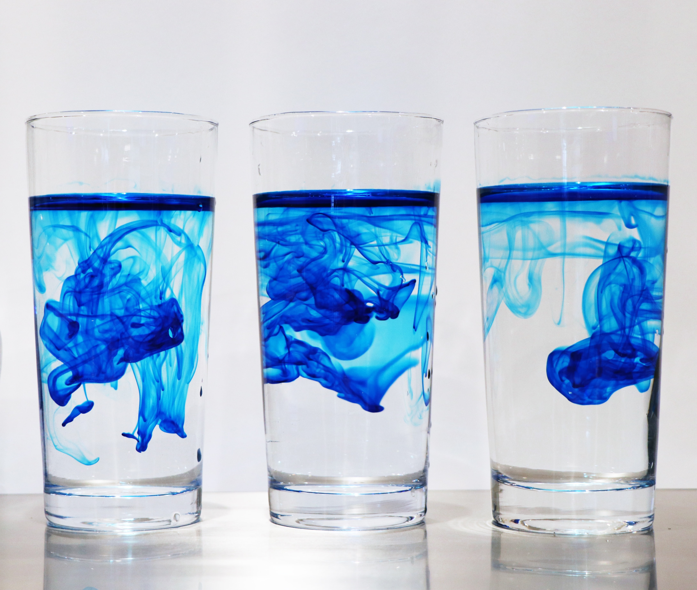

University of Oslo
Practical Pedagogical Education (PPU)
2021 - 2022
Practical pedagogical education (PPU) is a one-year teacher education of 60 credits, which consists of pedagogy, subject didactics and practice in school.
With completed PPU, you are qualified to teach in upper secondary school, secondary school and the middle stage of primary school.
University of Oslo
Master: Computational Science - Material Science
2019 - 2021
Materials science is the study of materials, their design and properties.
In computational materials science we use the computer and computational tools to address basic questions in materials science.
One learns to use the computer to model materials from the atomic to the macroscopic scale.
Nanyang Technological University
Study Abroad
2019 - 2019
In the spring semester 2019 I studied abroad at
Nanyang Technological University which is in Singapore in South-East Asia.
University of Oslo
Bachelor: Material Science for Energy and Nanotechnology
2016 - 2019
The program is a mixture of physics, chemistry and mathematics.
You learn material science to invent new solutions within fields of energy, climate and health.
Academic Projects
Here are some highlighted projects during my student years to showcase my academic background. It will be much easier to show what I have done as posts on this website, rather than you scrolling through my Github (but please feel free to do so by pressing the button below).
 © Photo by Mahdis Mousavi on Unsplash
© Photo by Mahdis Mousavi on Unsplash
The main aim of this project was to study both classification and regression problems. We developed our own logistic regression for classification problems and wrote our own neural network code which studied both regression and classification problems.
 © Photo by Markus Spiske on Unsplash
© Photo by Markus Spiske on Unsplash
In this project we studied partial differential equations using Forward Euler, Backward Euler, Crank-Nicolsen and a Neural Network. In addition, we will also looking at eigenvalue problems using a neural network.
 © Photo by John Moeses Bauan on Unsplash
© Photo by John Moeses Bauan on Unsplash
The goal of this project was to study different methods within numerical integration. The methods that were studied was Gauss-Legendre Quadrature, Gauss–Laguerre Quadrature & Monte Carlo.
 © Photo by Halacious on Unsplash
© Photo by Halacious on Unsplash
In this project we used the widely popular Ising model to study the phase transitions in a magnetic system.

© Photo by Chaozzy Lin on Unsplash
In this project we studied the numerical stability of different methods for solving partial differential equations (PDE) and applied this to real world applications, such as the heat diffusion found in the lithosphere.
 © Photo by Luke Chesser on Unsplash
© Photo by Luke Chesser on Unsplash
The aim of this project was to use the Variational Monte Carlo (VMC) method and evaluate the ground state energy of a trapped, hard sphere Bose gas for different numbers of particles with a specific trial wave function.
© Photo by Mohamed Ismail
In this project we used Python to study images and created a custom Python package which turned ones colorful images of choice into dramatic grayscale or nostalgic sepia images.
© Photo by Minelead
In this assignment we used regular expression to extract information from web sites and performed simple statistics and data visualization on the data extracted from the sites.
 © Photo by Real Python
© Photo by Real Python
In this assignment, we built a web-based visualization of the corona dataset made publicly available by Folkehelseinstituttet (FHI).
 © Photo by SolarSchools
© Photo by SolarSchools
The thesis focused on the exploratory work of finding new materials to be used in solar cells applications to help solve the worlds energy crisis.